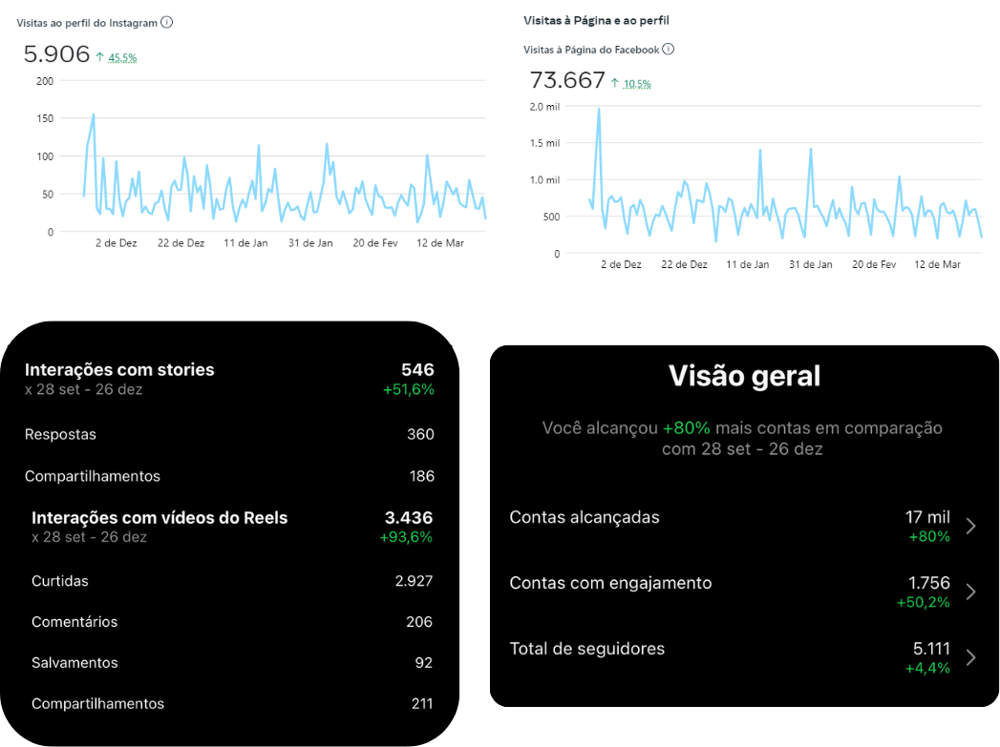
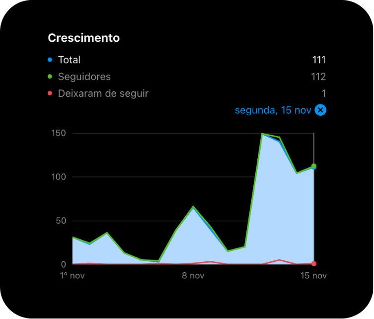
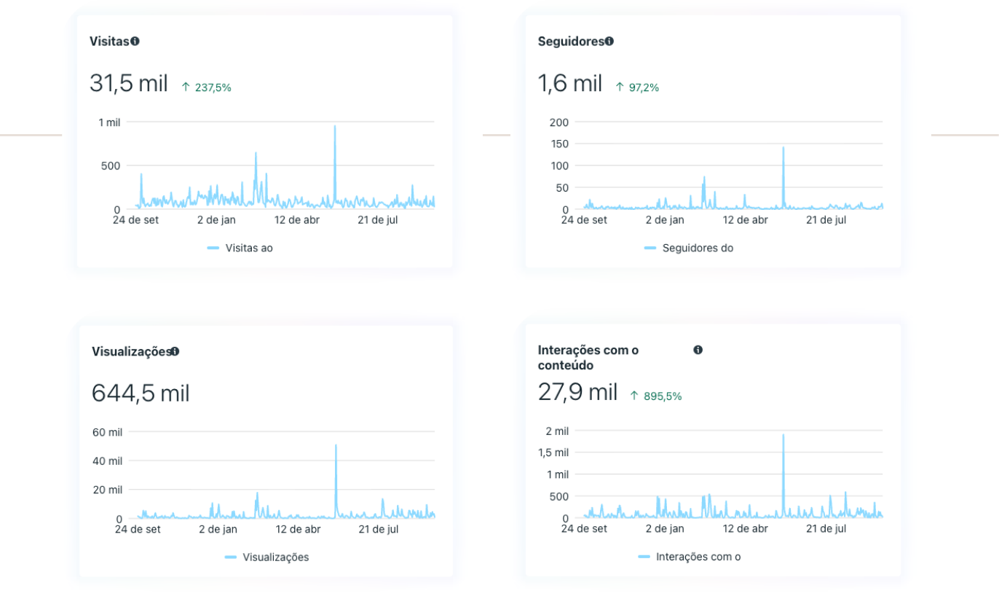
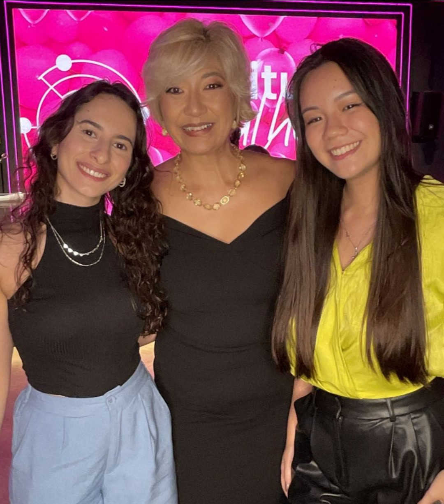

Estratégia, conteúdo e resultado — alguns dos projetos que já conduzi. Cada case aqui é anonimizado (sem nome, handle ou logo do cliente) e só entram números confirmados. Quer mais detalhes de algum? É só chamar no WhatsApp.
Supermercado atendido por anos, de estágio até encarregada de comunicação. Objetivo: sair de peças institucionais genéricas pra uma comunicação com rosto humano.

Print do painel de métricas do cliente, anonimizado por motivos de segurança do negócio.
Bar/restaurante novo, sem histórico de perfil. Objetivo: lotar a casa na noite de inauguração.
Loja de moda local, atendida via Consultoria. Objetivo: levar clientes que só compravam pelo WhatsApp também pro Instagram, e crescer o perfil sem investir em tráfego pago no primeiro momento.
Resultado: mais de 110 novos seguidores em apenas 15 dias, aplicando a estratégia definida na consultoria, com retenção quase total (só 1 deixou de seguir).

Print do painel de métricas do cliente, anonimizado por motivos de segurança do negócio.
Estúdio do setor de beleza, projeto de e-branding em parceria com consultoria de branding. Objetivo: a marca não se reconhecia no digital e não tinha tempo pra pensar em estratégia.
"Ela reestruturou, ressignificou e tudo fez sentido para a gente."
Quer saber mais sobre esse case? Me manda uma mensagem →E-commerce, trabalho mediado por agência. Estratégia de conteúdo pra fortalecer a comunidade e definir a linguagem da marca — legendas, copys, roteiros de vídeo e briefing pro designer.
Destaque: a audiência foi batizada de "Rainhas", pra gerar conexão — nome que a marca usa até hoje. Outra linha editorial criada, os "conselhos pra donas de casa", também continua no funil de vendas.
Quer saber mais sobre esse case? Me manda uma mensagem →Evento, trabalho mediado por agência. Estratégia pra atrair público, apoio a promoters e influenciadores na venda de ingressos, roteiros de vídeo, copys e briefing pro designer.
Destaque: criação de uma playlist no Spotify com os artistas confirmados, pra tirar a experiência da tela e gerar expectativa real antes do evento. Toda a estratégia foi montada com briefings prontos pra lidar com possíveis crises, facilitando a organização da equipe no dia. Resultado: a venda de ingressos esgotou antes do evento.
Quer saber mais sobre esse case? Me manda uma mensagem →Hospital filantrópico, atendido como encarregada de comunicação. Objetivo: recuperar a confiança da população através das redes sociais e produzir conteúdo de autoridade em saúde.

Print do painel de métricas do cliente, anonimizado por motivos de segurança do negócio.
"Muito boa a curadoria, Bianca, trouxe pontos relevantes para a marca e de acordo com o perfil/estilo, nada estravagante ou que não fosse a cara da marca... As melhorias são fáceis de fazer e que com certeza trarão mais visibilidade e posicionamento para o perfil da loja. Nós já tivemos outras consultorias antes, mas nada tão didático e específico como você trouxe na call e no material, a entrega foi inclusive mais do que esperávamos."
Cliente de Consultoria de Conteúdo, hoje no Calendário de Conteúdo
"Oi, Bia 🥰 Quero te contar uma coisa que está me deixando muito feliz! Estou aplicando as ideias e estratégias que você me passou — e está dando super certo! As vendas já começaram a sair usando exatamente o que conversamos, e eu estou amando os resultados. Obrigada 💕"
Cliente de Consultoria de Conteúdo
"Ela reestruturou, ressignificou e tudo fez sentido para a gente."
Ana Grella, projeto de E-branding
"Durante o projeto Pintura de Autorretrato, um minicurso que aconteceu entre setembro e outubro de 2025, contamos com o trabalho sensível e comprometido da Bianca... Sua atuação foi essencial para dar visibilidade ao projeto, tanto que alunas nos relataram que encontraram o curso por nossas redes. Ela criou uma narrativa visual cuidadosa, respeitosa e alinhada à proposta do curso."
Sobre o trabalho de social media e cobertura de um projeto cultural
Desde o começo da carreira, a paixão por varejo levou até o Instituto Mulheres do Varejo (IMDV). A entrada foi por iniciativa própria: encontrei o Instagram do comitê de comunicação, e ofereci um projeto de comunicação digital em troca de fazer parte do Instituto — mesmo sem preencher todos os requisitos pra participar do grupo naquele momento.
Dessa aproximação nasceu uma mentoria de carreira com Sandra Takata, hoje Presidente do IMDV, e também o tema do TCC em Relações Públicas: um plano de comunicação para o Instagram do próprio Instituto, produzido em parceria com duas colegas de faculdade.

Esses são só alguns exemplos, sempre com números reais, sem inflar nada.
Quer conferir outros cases ou ver mais detalhes de algum desses? Por transparência, prefiro te mostrar o restante do portfólio diretamente — me manda uma mensagem.
Falar no WhatsApp